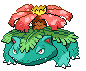

PokeWiki

En la Pokédex, Venusaur es descrito como un Pokémon cuyo enorme bulbo en la espalda florece cuando madura, liberando una energía poderosa. Su flor emite un aroma que puede influir en el entorno y atraer a otros Pokémon. Se dice que, cuando el bulbo finalmente se abre, la flor de Venusaur se convierte en un símbolo de su completa evolución. Además, su flor necesita la luz solar para crecer y alimentarse, lo que le otorga una gran fuerza y resistencia.
Venusaur es la forma final de evolución de Bulbasaur y Ivysaur, introducido en la primera generación de Pokémon. Es un Pokémon de tipo Planta/Veneno, conocido por el enorme flor de loto en su espalda, que representa el bulbo de su evolución anterior. En los juegos y el anime, Venusaur es un Pokémon fuerte y resistente, capaz de controlar la naturaleza a través de su flor. Su poder se incrementa con el paso del tiempo, siendo uno de los Pokémon más emblemáticos y populares.

Rugido:
Venusaur puede desempeñar diferentes roles competitivos dependiendo de la estrategia. Si se busca un enfoque más especializado, puedes usar Energibola, Rayo Solar, Tóxico y Drenadoras, aprovechando Clorofila en clima soleado para potenciar los ataques y curarse constantemente. En un rol defensivo, Drenadoras y Tóxico desgastan al oponente mientras Puño Hielo ofrece cobertura para tipos como Volador. Como atacante ofensivo, Rayo Solar o Energibola se combinan con Clorofila para aprovechar su velocidad en sol y causar gran daño. En equipos de clima soleado, Venusaur se vuelve aún más rápido y potente, usando Rayo Solar con gran efectividad gracias a su habilidad para duplicar la velocidad bajo el sol, mientras cubre debilidades con Puño Fuego. Con su resistencia y opciones ofensivas y de soporte, Venusaur puede adaptarse a diversas tácticas competitivas.
Video de un combate de Venusaur, al ser un pokemon adulto, puede pelear muy bien
| Tipo | Fuego | Volador | Hielo | Psíquico | Agua | Eléctrico | Lucha | Planta | Veneno | Roca | Bicho | Hada | Dragon | Fantasma | Siniestro | Normal | Acero | Tierra |
|---|---|---|---|---|---|---|---|---|---|---|---|---|---|---|---|---|---|---|
| Efectividad | x2 | x0.5 | x0.25 | x0.5 | x1 | x0.5 | x1 | |||||||||||
| Nivel | Movimiento | Tipo | Potencia |
|---|---|---|---|
| 1 | Desarrollo | Planta | -- |
| Danza petalo | — | ||
| Latigo cepa | 55 | ||
| Placaje | Normal | — | |
| Drenadoras | Planta | - | |
| 40 | Bomba Germen | 80 | |
| Latigazo | 100 | ||
| 56 | Rayo solar | 120 | |
| 60 | Rayo solar | 120 | |
| 80 | Tóxico | Veneno | 120 |